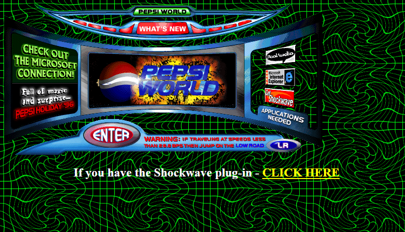
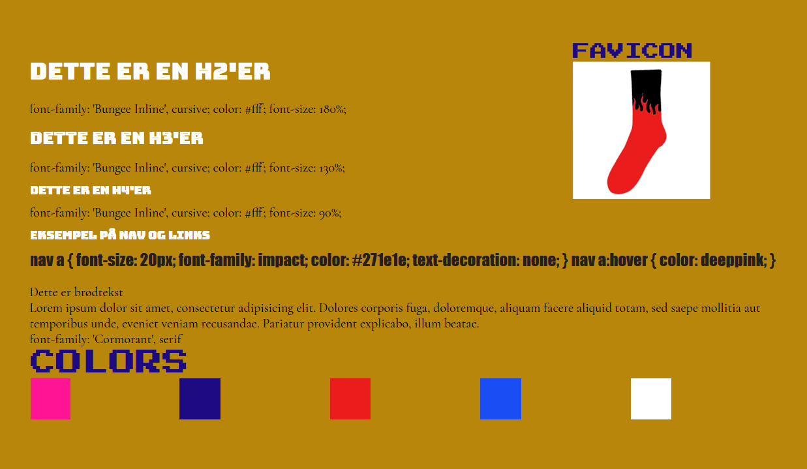
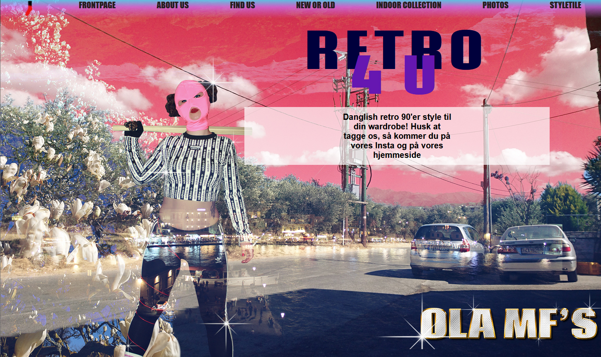
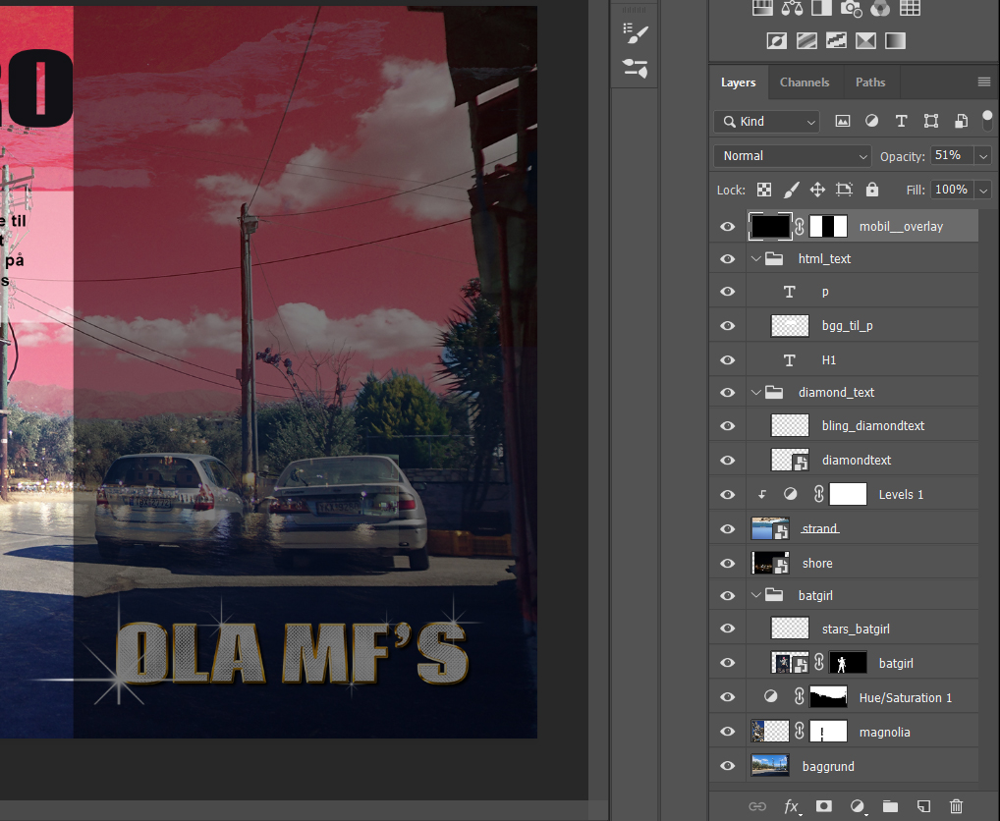
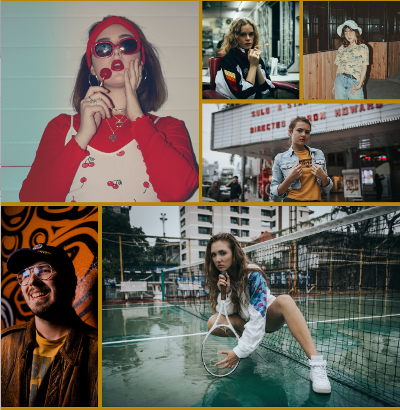

Grundlæggende web
Beskrivelse
I tema 2, grundlæggende HTML er der blevet introduceret værktøjer til at kunne producere en responsiv hjemmeside med HTML og CSS. Disser værktøjer er delt op i en rationel rækkefølge, der understøtter den gode måde at arbejde med digitale produktioner på. Der er blevet brugt layoutviden indenfor gestaltlove, farveharmonier, komposition. Idégenerering ved skitsering, mock-ups, moodboards mm. Struktureret ved sitemap og generel god mappestruktur. Undersøgt ved brugertests og lighthousetest. Og sidst, men ikke mindst uploadet til FTP-client og introduktion og brug af Photoshop, XD og Brackets. Til denne opgave er der blevet afprøvet alle ovennævnte metoder, for netop at afprøve dem. Med min viden om farver, har et program som Adobe Color været en god hjælp til favevalg, når man har grundlæggende viden om hvad farverne har af betydning. Opbygning af HTML-dokument med mobilefirst og konsistent udtryk sitet igennem har været fokus, samt at imødekomme “kundens” idé om stil, der har været den stillede opgave.
Design
Pepsi's hjemmeside 1996
Vi fik tildelt en stilart per gruppe, hvor jeg endte med at skulle designe en hjemmeside med inspireret stil fra Digital retro-design (90'erne). Jeg valgte at udvikle en side for retro-tøj.
Styletile
I Styletile skal reglerne for udseendet defineres. Selve dette styletile ville jeg gerne have udstrålede det kaotiske ved netop stilarten retro-design, derfor kan det også se lidt rodet ud. En del af retro-designet er også "det grimme", som vi nok vil kalde det i dag - f.eks. den karrygule farve, man nok nødigt vil bruge med fuldt overlæg i dag, medmindre det er for nostalgiens skyld.
Splash
Indenfor digital retro findes "less is more" ikke. Jeg arbejdede ud fra at der skulle ske så meget som muligt på billedet, men at det samtidig skulle udstråle en form for fokus på tøj. Der er blevet brugt mange lag i Photoshop, masker og arbejdet meget med adjustment layers.
Kodning
Da jeg har erfaring med HTML og CSS kom de første øvelser meget let til mig. Dog har jeg aldrig leget med CSS-grid før, som vi kom til at lære her.